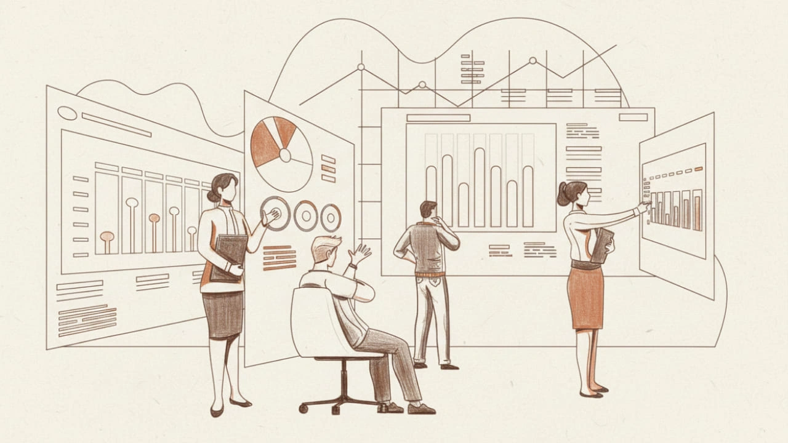
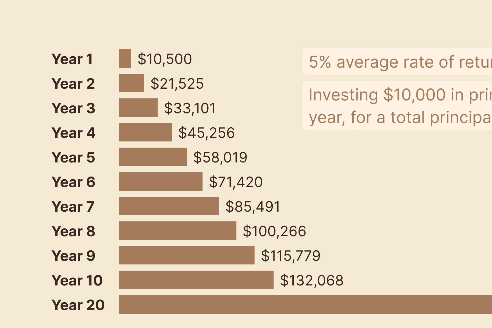

In Warren Buffett's famous biography, The Snowball, compounding is compared to rolling a snowball. You just need to find a really long hill and let it roll; the longer it rolls, the bigger it gets.
The biggest challenge on the path of value investing isn't skill, it's patience. If you rationally know you're holding the right investment, you have to tough it out, resisting all sorts of temptations and fears. Stick with the choice you made; that's the only way you'll get to taste the sweet fruit of compounding.
First up, some chicken soup for the soul
I probably don't need to sell you on the power of compound interest. You can find articles about it all over the internet, and industries like insurance use its formulas all the time. The bottom line is: it's all about patience and holding for the long haul.
I can't really help with the specifics, so I'll just share a few "golden rules" to help strengthen your mindset.
- When you decide to buy a stock, you're a part-owner of the business. The market's daily ups and downs are irrelevant. It wouldn't even matter if the market shut down for a year. The only thing you should care about is reaping the rewards of what you've sown years from now.
- Patience is enduring the long, tough stretches to wait for that short period of payoff.
- Price is what you pay. Value is what you get.
- Uncertainty is the friend of the long-term value investor.
- Wall Street makes its money from constant trading. You make your money by sitting on your hands.
What Value Investing is Really About
I think before we can even talk about patience and long-term holding, you first have to grasp the core of value investing. Don't lose sight of that, and don't overcomplicate it. It all boils down to a simple concept, and once it clicks, everything else makes sense.
Buying Stock is Buying a Piece of a Business
You buy stock because you believe in how a company is run or in its future. You're giving that company your money so it can keep doing what it's already doing.
As an investor, you're sticking with the company through an uncertain future. So, when the company profits, you get to share in those profits.
That makes sense, right? Isn't that the whole reason stocks were invented in the first place?
Short-term price swings, all those fancy technical indicators—that's all stuff that came later. That shouldn't be what you, as a value investor, are chasing.
The reason you make a profit on the sale (the "price difference") is that the company you stuck with actually got better. They worked hard, made more money, and that made the shares you own more valuable. That's why you can sell them for a higher price down the road.
So, from day one, what you should be focused on is the business's value, not its short-term stock price.

Short-Term Noise
In the short run, the stock market is affected by all kinds of noise. The common ones are things like policy changes, political drama, and speculation. A lot of that noise is just us psyching ourselves out—like worrying when interest rates go up, and then also worrying when they go down.
But none of that matters. We don't need to get distracted by it at all. Given enough time, a stock's price will eventually come back to the company's intrinsic value.
Then again, when you think about it, it's not completely irrelevant. If the market wrongly undervalues a stock in the short term, isn't that just a great opportunity for us to buy more?
Sleep Well at Night
As a value investor, all you need to do is buy great companies at a reasonable price. That's what lets you sleep soundly at night, keep a stable mindset, and stay in a positive cycle.
If the company you bought stock in is causing you to lose sleep every night, why did you pay money for that?
How to Actually Be Patient and Hold for the Long Term
When people hear "patience and long-term holding", they immediately think it's all about willpower.
But really, you should try to reduce the number of times you even need to use willpower. If you're constantly fighting your own human nature, you're bound to crack eventually.
Have a Clear Investment Plan
Before you ever buy a stock, write down your "reasons for buying" and your "potential reasons for selling." This is your guiding principle.
Anytime you feel your willpower wavering, just pull out that list. Check if your current holding "still fits your reason for buying" or if it has "met your criteria for selling." Then you'll know exactly what to do.
You Don't Need to Watch the Market Every Day
Seriously, as a long-term value investor, what reason could you possibly have for watching the market every single day? I can't think of a single way that "diligently watching the market" makes you money. I can, however, think of plenty of ways it just triggers your greed and fear.
You're better off spending that time reading a few more financial reports or some insightful books. Filling your head with knowledge—that's the real key to building wealth.
Filter the Media Commentary
I don't know if you've lived through a real bear market, like the 2000 dot-com bubble, the 2008 financial crisis, or all the drama with the European debt crisis. Every time, there's this overwhelming feeling of despair, and the media just fans the flames, making it seem like the world is ending tomorrow.
But every single time, it's been proven that the economy eventually gets back to where it should be.
What you should be worried about are the things that will actually impact the company's future, like "the business itself is failing" or "the entire industry is in decline." So, whenever a news story breaks, your first job is to figure out if this is a short-term impact or a long-term impact.
Margin of Safety
If you buy a stock at a price that's cheap enough and safe enough, you can stay perfectly calm when short-term volatility hits.
This is why the Margin of Safety is one of the cardinal rules for value investors. It protects you from losses. You shouldn't be afraid of missing out on gains; you should be afraid of losing money.
The Sweet Payoff of Compounding
Finally, let's talk again about the sweet payoff that comes from compound interest.
Let's say you invest $10,000 every year with an average return of 5% (which plenty of ETFs can hit). By year 20, you'll have invested a total principal of $200,000. But you'll end up with $347,193. That's a 173.5% rate of return.
If you can get an average return of 8%, then by year 20, your rate of return is 247.1%. This is a solid result from compounding, and it doesn't require you to gamble your life savings by trading in and out of the market.

When you can successfully ride out the short-term volatility and just hold a company's stock for the long haul, letting the business make money for you over time, you won't just get incredible returns—you'll also sleep soundly at night.
Compared to working hard to read a ton of information every day only to frequently adjust your strategy, holding for the long term is the real principle value investors should be sticking to.